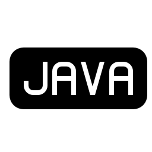

Teknik Informatika
Teknik informatika merupakan disiplin ilmu yang menginduk pada ilmu komputer, yang pada dasarnya merupakan kumpulan disiplin ilmu dan teknik yang secara khusus menangani masalah transformasi atau pengolahan fakta-fakta simbolik (data) dengan memanfaatkan seoptimal mungkin teknologi komputer. Transformasi itu berupa proses-proses logika dan sistematika untuk mendapatkan solusi dalam menyelesaikan berbagai masalah, sehingga dengan memilih program studi Teknik Informatika, kita menjadi terlatih berpikir secara logis dan sistematis untuk dapat dengan mudah menyesuaikan diri dengan pekerjaan apapun.
Seiring dengan perkembangan teknologi komputer yang sangat cepat, maka program pendidikan pada program studi Teknik Informatika diarahkan pada penguasaan ilmu dan keterampilan rekayasa informatika yang berlandaskan pada kemampuan untuk memahami, menganalisis, menilai, menerapkan, serta menciptakan piranti lunak (software) dalam pengolahan dengan komputer. Di samping itu, lulusan diharapkan memiliki kemampuan untuk merencanakan suatu jaringan dan sistem komputer, serta menguasai dasar-dasar ilmu dan tenologi informasi sebagai landasan untuk pengembangan studi lanjutan.
Pengertian Dari :
